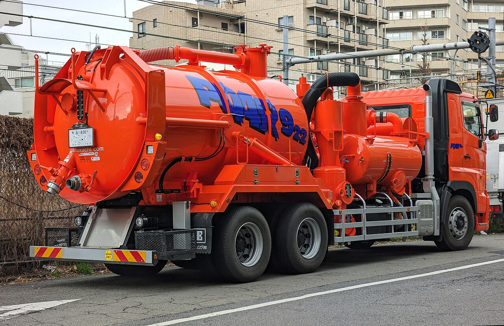

Antalya'da gider, boru ve tıkanıklık açma hizmeti. Kameralı arıza tespiti ile tıkanıklığın yerini bulur, doğru noktadan açarız. Ev, apartman ve işyerleri için bizi arayın, hemen adresinize geliyoruz.
Tıkanıklığın yerine göre robot ya da basınçlı su ile kırmadan açıyoruz.
Kameralı arıza tespiti ile asıl sebebi bulup kalıcı çözüm öneriyoruz.
Evet, ev ve işyerine 7/24 hizmet veriyoruz.
Arayın ya da WhatsApp'tan yazın, en yakın aracımızı yönlendirelim.